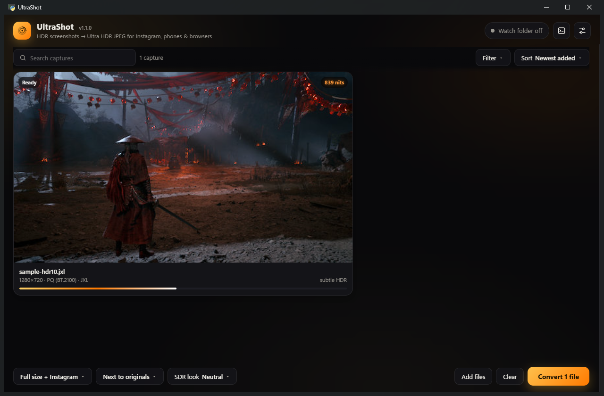
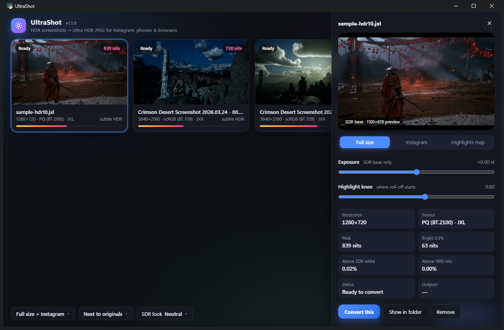
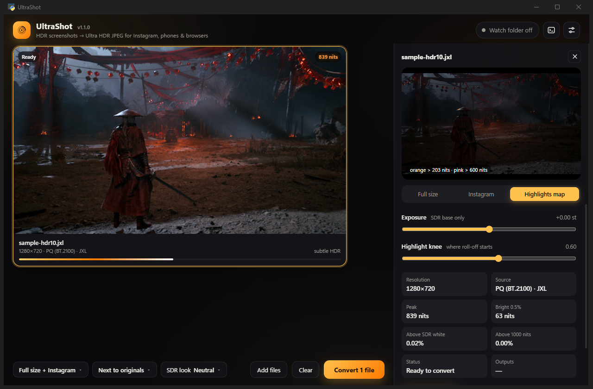
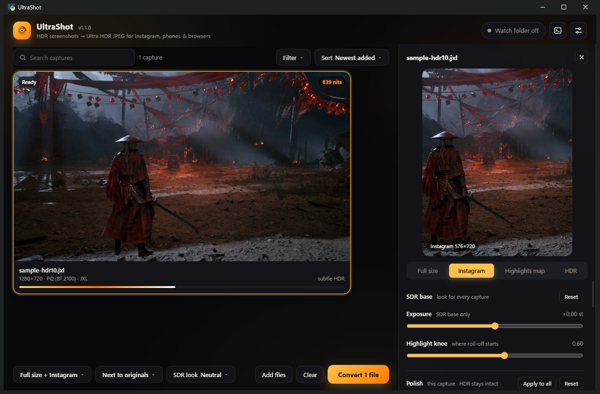
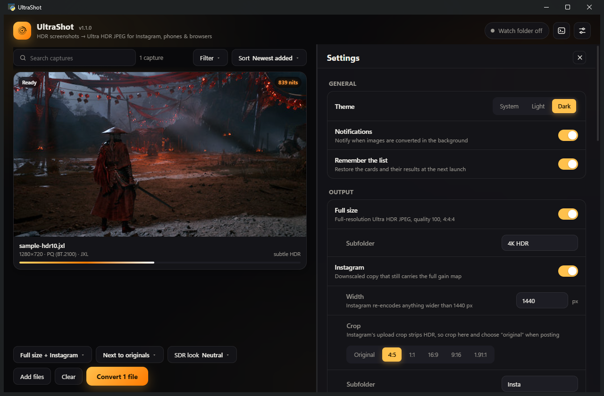
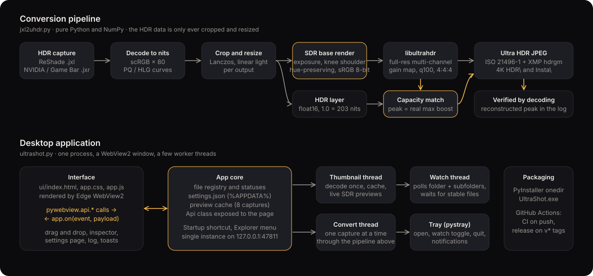

HDR screenshots, shared in HDR.
UltraShot converts HDR game screenshots from ReShade, the NVIDIA App and the Windows Game Bar into Ultra HDR JPEGs: ordinary JPEG files that Instagram, Threads, Google Photos, Chrome and Android phones display in full HDR, and that everything else displays as a correct SDR photograph.
Download for Windows View on GitHubFree and open source under the MIT licence. Windows 10 and 11. No installer, no account, no upload to anyone's server.

Why this exists
A game rendered in HDR produces screenshots that only a handful of programs can open, and the easy way out, converting them to a normal JPEG, throws the HDR away. Uploading a true HDR file instead does not help: social platforms refuse it, flatten it, or run it through their compression pipeline and return something dim and banded. The one format that survives all of that is the Ultra HDR JPEG, a standard JPEG carrying a small gain map that tells HDR displays how much brighter each pixel should be. Because it is structurally a JPEG, it passes through upload pipelines untouched, and because the HDR is stored as a difference from a conventional image, nothing ever looks wrong on a screen that cannot show it.
UltraShot is the missing step between the capture tools and that format. It never tone-maps or alters the HDR data, it writes the gain-map metadata so that phones apply the full range rather than a third of it, and it crops and resizes for Instagram before upload so that Instagram has no reason to re-encode the file.
What you get
Drop or watch
Drop files and folders on the window, or let the watch folder convert every new capture a few seconds after it is saved. Runs from the tray and starts with Windows.
The HDR layer stays intact
Scene brightness goes in and comes out. Exposure and look controls shape only the SDR fallback that non-HDR screens and thumbnails show.
A gain map phones apply in full
The encoder's default metadata leaves most of the HDR unapplied on a 1000-nit phone. UltraShot matches the declared capacity to the real range.
Instagram-ready output
A 1440-pixel copy, cropped to 4:5, 1:1, 16:9, 9:16 or 1.91:1 with a positionable frame, so nothing has to be changed during upload.
Live preview and highlights map
See the SDR base image as viewers will, adjust it with two sliders, and switch to a map of every pixel brighter than SDR white.
Full quality, both outputs
Full-resolution multi-channel gain map, quality 100, 4:4:4 chroma, ISO 21496-1 and XMP signalling, capture date preserved.
In use




See it for yourself
A full 3840×2160 Ultra HDR JPEG straight out of UltraShot, from an NVIDIA App capture of Crimson Desert. Nothing was resized or re-encoded for the web.

On an HDR display, Chrome and Edge render this image in HDR right here on the page: the sky, the sunlit cloud edges and the glint on the water sit well above the white of this text, at up to 925 nits. On an SDR screen you are seeing the base image, which is exactly what the format is for; the same file is a correct photograph on both. Open the file on its own to view it at full size (5.5 MB), or drop it into Google Photos on an HDR phone.
Gallery
Six more captures, each a full 3840×2160 Ultra HDR JPEG exactly as UltraShot wrote it. They load lazily as you scroll (about 5 MB each); click one to open it on its own.


How it works
The conversion engine is a single Python module built on Google's libultrahdr; the application is a thin shell around it. The full description is in the how-it-works guide.

Decode to absolute luminancescRGB floats are multiplied by 80 nits; PQ and HLG code values go through the BT.2100 transfer curves. From here the HDR data is only cropped and resized, in linear light.
Render the SDR baseA hue-preserving tone map with an adjustable knee rolls highlights off toward white instead of clipping them. This is the image non-HDR viewers see, and it can be previewed live.
Encode the gain maplibultrahdr compares the linear HDR image with the base and stores the ratio per pixel and per channel, at full resolution and quality 100.
Match the declared capacityThe file is read back and re-encoded with the target peak set to the gain map's real maximum, so a phone with four times SDR headroom applies the whole gain map rather than a third of it.
Signal it to every readerISO 21496-1 metadata plus the older Adobe and Android XMP form, then a final decode to confirm the peak that HDR viewers will reconstruct.
Posting to Instagram and Threads
Both platforms show gain-map JPEGs in HDR, and both remove the gain map the moment an upload is cropped, zoomed or filtered. Finish the image in UltraShot and change nothing on the way up.
PrepareKeep the Instagram output enabled, pick the crop in Settings or the inspector, and check the SDR look. The HDR layer is unaffected by the look controls.
Upload from a desktop browser or an Android phoneiPhone uploads are transcoded through HEIC and lose the gain map.
Choose "Original" in the aspect-ratio menuDo not drag or pinch the crop frame and skip the filter and adjustment screens, then post.
The Instagram guide covers verification and how other services handle gain maps.
Supported captures
| Capture tool | File | Contents |
|---|---|---|
| ReShade 6.x (JPEG XL screenshot format) | .jxl | Float16 scRGB for scRGB games; 16-bit PQ or HLG for HDR10 games |
| NVIDIA App, GeForce Experience (Alt+F1) | .jxr | Float scRGB, one subfolder per game |
| Windows Game Bar (Win+Alt+PrtScn) | .jxr | Float scRGB, saved to Videos\Captures |
Enable HDR in Windows and in the game before capturing; the capture guide has the settings for each tool.